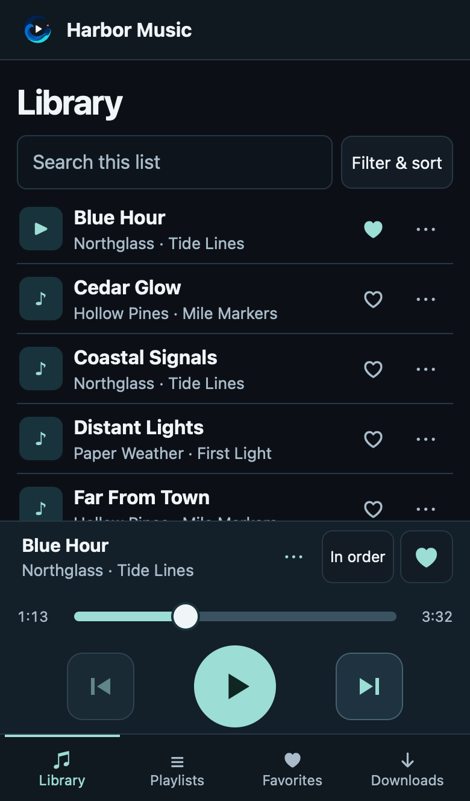
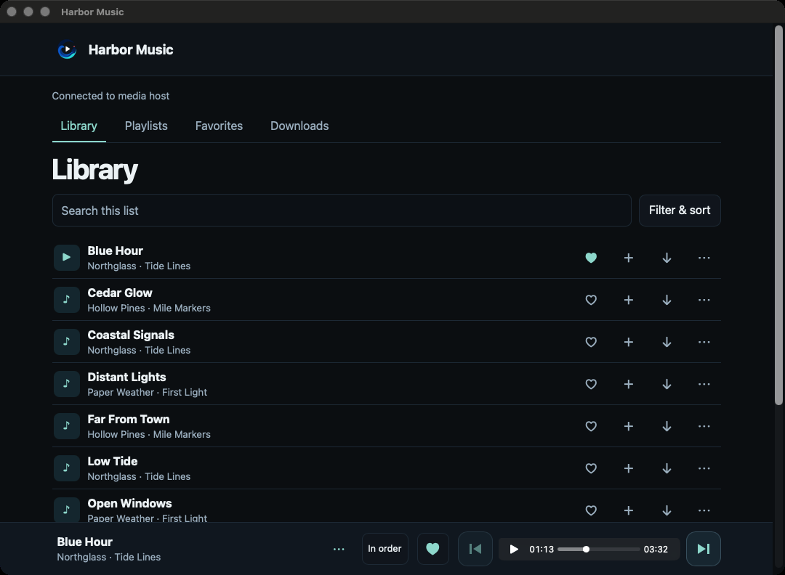

Features
Listen on iPhone, iPad, Android, and desktop browsers. Add Harbor to your phone’s Home Screen or build the optional Mac app.
Harbor Music on iPhone and Mac
Both screenshots show the same sample music library.




Library and playback
- Browse and queue music
- Filter by artist, album, or genre and sort alphabetically. Harbor loads more tracks as you scroll. Play in order or shuffle the whole playlist, album, or filtered view.
- Playlists, Favorites, and playback position
- Choose which playlists stay on a device and which sync. Favorites and your saved track and position are available on paired devices. After a connection drops, Harbor can resume from the saved spot.
- Offline listening
- Choose Favorites or playlists to download. Harbor saves new additions and removes automatic copies when no selected list needs them. Manually saved tracks stay on the device.
- Private sharing
- With friend sharing enabled, send a song or playlist to someone running their own Harbor. Approve their installation before sending. Each offer closes after one verified import.
Listening and sharing
Can I listen when the host is off?
You can play previously downloaded tracks on the device that saved them. Streaming, new downloads, and syncing resume when your host is reachable.
Can a friend use a separate Tailscale network?
Yes. Friend sharing uses a dedicated transfer address for approved Harbor installations. Your player stays on your private network.